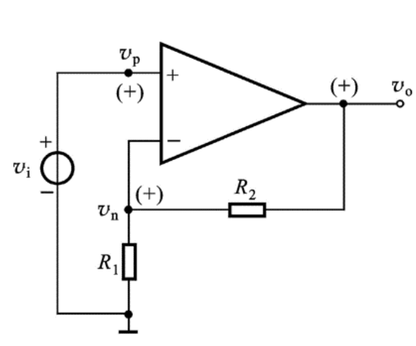
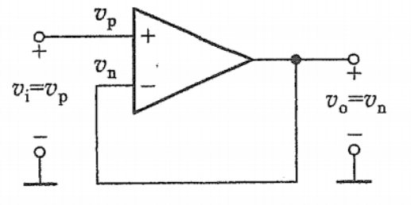
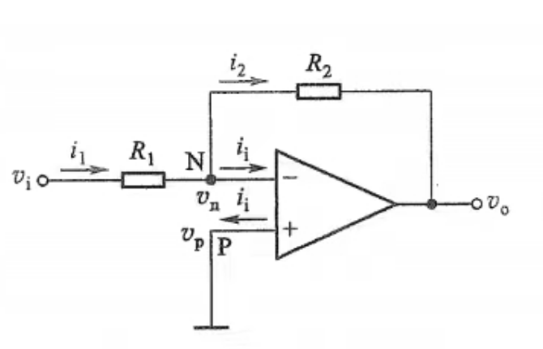

第二章 运算放大器
第一节 集成电路运算放大器
一、集成电路运算放大器简介
绝大多数集成运放可分为：
- 输入级：差分放大，解决漂移的机制与信号的有效放大问题。
- 中间级：电压放大，极大提高电压增益。多采用直接耦合的多级放大电路
- 输出级：功率放大，极大提高输出能力。
二、运算放大器的电路简化模型
三、运算放大器的传输特性
电压传输特性曲线（用于描述\(v_O\)与\(v_P-v_N\)的关系）：

- 线性工作区：斜线部分，此时\(v_O = A_{vo}(v_P-v_N)\)
- 饱和区（非线性区、限幅区）：水平线部分，此时\(v_O\)达到最大值（饱和值）
实际情况下，有：
电源电压\(V_{+}、V_{-}\)
运放输出端的饱和压降\(\Delta V\)
则输出电压最大值：\(+V_{Om} = V_{+} - \Delta V、-V_{Om} = V_{-} + \Delta V\)
进而有\(A_{vo} = \frac{+V_{Om}}{(v_P - v_N)_{max}} = \frac{-V_{Om}}{(v_P-v_N)_{min}}\)
四、共模信号与差模信号
- 差模输入信号：两输入端信号的差值，\(v_{id} = v_P - v_N\)
- 共模输入信号：两输入端信号的算术平均值，\(v_{ic} = \frac{v_P+v_N}{2}\)
$$\begin{cases}
v_P = v_{ic} + \frac12 v_{id}\\
v_N = v_{ic} - \frac12 v_{id}
\end{cases}$$
即两输入端共模电压大小相等，极性相同；
两输入端差模电压大小相等，极性相反。
共模抑制比：差模增益与共模增益之比的绝对值。用于反映运放放大差模信号与抑制共模信号的能力。
$$K_{CMR} = |\frac{A_{vd}}{A_{vc}}|$$
理想情况下，\(A_{vc} = 0, K_{CMR} = \infty\)
第二节 理想运放
理想运放：将集成运放的各项性能指标理想化得到的理想运放模型
理想运放的特性：
- \(+V_{Om} = V_{+}、-V_{Om} = V_{-}\)
- \(A_{vo} \rightarrow \infty\)，由于\(v_O = A_{vo}(v_P-v_N)\)且\(v_O\)为有限值，所以\(v_P \approx v_N\)。这说明运放两输入端电压近似相等，如同两输入端近似短路，这种现象称为虚假短路（虚短）。
- \(r_i \rightarrow \infty\)，故\(i_P\approx i_N \approx0\)，这种现象称为虚断。
- \(r_o\approx 0\)
第三节 基本线性运放电路
一、同相放大电路
1.基本电路

2.放大电路指标
-
闭环电压增益\(A_v\)：对运放反向端节点应用KCL：
$$\frac{v_o-v_n}{R_2} = \frac{v_n}{R_1} + i_n$$
由虚短和虚断特性：\(v_n\approx v_p = v_i、i_p\approx i_n\approx 0\)，故：
$$A_{v} = \frac{v_o}{v_i} = 1+\frac{R_2}{R_1}$$
\(A_v\)为正值，表示\(v_o\)与\(v_i\)同相，故称该电路为同相放大电路
3.电压跟随器
要使\(A_v = 1\)，即要使\(\frac{R_2}{R_1} = 0\)，令\(R_2 = 0, R_1 = \infty\)，有：

二、反相放大电路
1.基本电路

2.放大电路指标
-
闭环电压增益\(A_v\)：
虚短：\(v_n\approx v_p = 0\)
虚断：\(i_i = i_n\approx i_p\approx 0 \Rightarrow i_1 = i_2\)
$$\frac{v_i}{R_1} = -\frac{v_o}{R_2}$$
$$A_v = \frac{v_o}{v_i} = -\frac{R_2}{R_1}$$
\(A_v\)为负值，表示\(v_o\)与\(v_i\)反相，故称该电路为反相放大电路